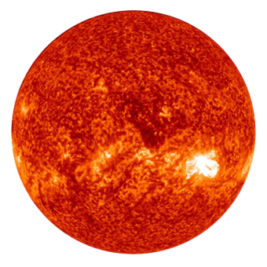

Learn More

太阳

地球

月亮
人类美丽的家园
What is the Earth?
地球是太阳系八大行星之一，按离太阳由近及远的次序排为第三颗，距离太阳1.5亿公里。地球自西向东自转，同时围绕太阳公转。
这颗有着广阔天空和蓝色海洋的行星始终给人以坚实巨大的感觉。而在宇宙中，地球给人的印象却并非如此：这个在一层薄薄而脆弱的大气笼罩下的星球并不见得有多大。在太空中，地球的特征是明显的：漆黑的太空、蓝色海洋、棕绿色的大块陆地和白色的云层。
地球内部有核、幔、壳结构，地球外部有水圈、大气圈以及磁场。它是目前宇宙中已知存在生命的唯一的天体，是包括人类在内上百万种生物的家园。
How old is the Earth?
21世纪科学家对地球的年龄再次进行了确认，认为地球产生要远远晚于太阳系产生的时间，跨度约为1.5亿年左右这远远晚于此前认为的30-4500万年。此前科学家通过太阳系年龄计算公式算出了太阳系产生的时间为55.68亿年前，而地球产生的年龄要比太阳系晚30亿年到45亿年左右，大约为25.48亿年前左右。在2007年时，瑞士的科学家对此数据进行了修正，认为地球的产生要在太阳系形成的6200万年之后。
科学家一般是通过同位元素铪182和钨182两种放射元素来计算地球和月球年龄的。铪182的衰变期为900万年衰变之后的同位素为钨182，而钨182则是地核的组成部分之一。科学家们认为在地球形成时，几乎所有的铪182元素全部已经衰变成了钨182。仅有极少量存在，正是这微量的铪182才能够帮助科学家测算地球的真实年龄。尼尔斯研究所的教授说道：“所有的铪完全衰变成钨需要50-60亿年的时间，并且都会沉在地核，而新的表明，地球和月球上地幔含有的元素量高于太阳系，而经过测算时间大约为1.5亿年左右”
Revolution
全球变暖的主要原因是人类在近一个世纪以来消费地球的过程中排放了大量的温室气体，其直接的后果，就是造成全球降水量重新分配、冰川和冻土消融、海平面上升等，既危害自然生态系统的平衡，也威胁了人类自身的食物供应和居住环境。
如果到了2050年，这种状况没有改变，地球气候恶化的趋势无法逆转。气候恶化不可逆转的结果，其中一个便是消失的物种。
由于全球气候的变化，北极冰帽目前的融化速度已经超出了科学家的预期，美国国家海洋和大气管理局(NOAA)科学家说，到2050年时，北极大部分地方的冰帽将减少40%，这将给北极熊、海象及其他海洋生物带来严重影响。
目前，北极熊的数量约为1.6万只。研究人员说，到2050年时，北极熊有可能从北极海冰融化速度最快的地区消失。剩余的北极熊，有许多到2100年时也可能会消失。
科学家预测，即便是中等程度的全球变暖，也会导致全球两成至三成物种的灭绝，而如果大气不断升温，将有超过一半的物种永远从地球上消失。Eight things you must know about the Earth
质量
5.976e+24 kg
赤道半径
6,378.14 km
平均密度
5.515 gm/cm^3
自转周期
0.99727 天
公转周期
365.256 天
平均地表温度
15°C
赤道逃逸速度
11.18 km/sec
大气组成
氮 77%、氧 21%、其它 2%